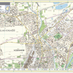

Les services de la ville en collaboration avec les service géomatiques de la Direction urbanisme et territoires de l’Eurométropole de Strasbourg mettent disposition le plan de Hoenheim :

Mercredi 19 Août 2026

Les services de la ville en collaboration avec les service géomatiques de la Direction urbanisme et territoires de l’Eurométropole de Strasbourg mettent disposition le plan de Hoenheim :

Prim.net favorise la mise à disposition, le partage et l’actualisation d’informations relatives aux risques naturels et technologiques.
Conciliateur de Justice : Pascal BLANC, conciliateur de justice pour la commune peut être saisi pour trouver un compromis dans des domaines tels que les relations de voisinage, les impayés, les litiges de la consommation, les problèmes locatifs, etc.
03 88 19 23 67 sur rendez-vous – pascal.blanc@conciliateurdejustice.fr
Délégué du Défenseur des Droits : Gérard LINDACHER, délégué du défenseur des droits pour la commune peut être saisi pour les litiges entre particuliers et administrations.
03 88 19 23 67 sur rendez-vous – gerard.lindacher@defenseurdesdroits.fr
Maître Patricia BAUER, avocate, donne des consultations gratuites et peut être saisie pour des divorces, litiges avec employeurs, etc.
03 88 19 23 60 sur rendez-vous
Séverine BROGGI, avocate au barreau de Strasbourg, vous conseille et vous défend en droit famille personnes successions, victimes, bail d’habitation, copropriété, consommation
03 69 26 70 35 sur rendez-vous – sbroggi.avocat@gmail.com
Maison du Conseil Départemental : 4 rue des Magasins – 67800 BISCHHEIM
03 68 33 84 50 le lieu du rendez-vous vous sera donné en fonction de votre adresse de domicile
Séverine BROGGI, Médiateur conventionnel et judiciaire, certifié et inscrit à la Cour, Maître Praticien en Programmation Neuro-Linguistique, vous accompagne vers la résolution de votre conflit individuel ou collectif, au travail, familial, etc :
03 69 26 70 35 sur rendez-vous – sbroggi.avocat@gmail.com
Dres ANDRE-BERNHART Valérie et WERNER Géraldine
03 88 62 12 99
12 rue d’Andlau
Dr BEYER Thierry (acupuncteur)
03 88 62 62 92
20 rue de la République
Dr HAAS Pierre
03 88 33 48 01
2 avenue du Ried
Dr WILLERVAL Sylvie
03 88 83 47 10
3 rue du Marais
Dr HUARD Marie
03 88 83 52 36
55 rue de la République
Dr MULLER Henri
03 88 04 72 46
3 rue des Champignons
Dr MARQUART-ELBAZ Claudine
03 88 33 44 68
12A avenue du Ried
Mme LUPOLD Aurélie et DANNENBERGER Michael
03 88 33 31 69
21 rue de la République
Mme MATRY Johanna et YEKRANGI Catherine
03 88 62 60 91
1 place du Dr Albert Schweitzer
Mme PASTOR Anne
03 88 81 26 62
19 rue de la Robertsau
Mme RITTER Célia
07 84 94 31 97
31 route de la Wantzenau
Mme ROTH Debora
03 88 81 22 33
12 A avenue du Ried
M. SCHOENY Patrick
03 88 04 87 80
3 rue des Marais
Mme TRZEBIATOWSKI Julie
09 81 04 45 46
3 place du Dr Albert Schweitzer
Pharmacie de La Poste
03 88 62 65 00
19 rue de la Robertsau
Pharmacie de la République
03 88 33 06 94
77 rue de la République
Pharmacie du Ried
03 88 33 13 99
3 place du Dr Albert Schweitzer
Laboratoire de Hoenheim – Biogroup
03 88 33 13 77
9 rue de la République
Laboratoire DU RIED
03 88 48 38 28
9 place du Dr Albert Schweitzer
Dr HAMICHI-SCHEERER Fayza, Dr KARCH Martine, Dr BUI DOAN Elise
03 88 33 12 47
62 rue de la République
Dr BOUHANA Armand, Dr SAINT-SAËNS Audrey
03 88 33 26 21
3 avenue du Ried
Dr BELLEHSEN Jacques
03 88 83 00 08
5 rue du Haut-Koenigsbourg
Dr WALTER Géraldine
03 67 10 94 87
BatA 7 place du Dr Dr Albert Schweitzer
Dr FIRN Olivier
03 88 18 81 55
33 rue de la République
Dr SALMON Hugues
03 88 81 23 79
77 rue de la République
Dr OBER Serge (ostéopathe), GRÉGOIRE Jules
03 88 62 64 66
33A rue de la République
Dr ANTHONY Elsa, Dr BURGWAL Corinne, Dr HALDEMANN Grégoire (reconstruction posturale), Dr KOEBEL Olivier (+ ostéopathe), TOPAL Derya
03 88 33 30 35
5-7 rue du Lion
Dr MAZOYER Loïc, Dr MULLER Valérie
03 88 62 98 75
3 rue des Champignons
Dr SCHWARTZ Marie-Paule
03 88 62 53 98
26 rue des Vosges
Dr KALEIDO Cabinet Pôle Bien-être et Santé, Dr PILLON Guillaume (sport), Dr ROUCHON Romain, Dr LEH Pierre-Emmanuel
09 81 46 58 14
3 place Dr Albert Schweitzer
Dr MANSION Stéfania, Dr MIDEY Aude, Dr KELLER Matthieu, Dr OLLAND Jeremy, Dr RINGEISSEN Thomas
03 88 83 96 75
12A avenue du Ried
Dr SZACHSZNAJDER Delphine (sport, santé, handicap) Préparation physique – Enseignante en activité physique
06 68 59 97 79
5 -7 rue du Lion
Cabinet de masso-kinésithérapie PhysioHoenheim : Dr SOMER DAGLAYAN Mizgin et SELMER Arnauld (kiné du sport)
03 88 20 38 59
62 rue de la République
Mme TRAORE Rachel
03 88 83 08 12 ou 06 84 40 28 45
5 -7 rue du Lion
Chiens errants (I-CAD)
09 77 40 30 77